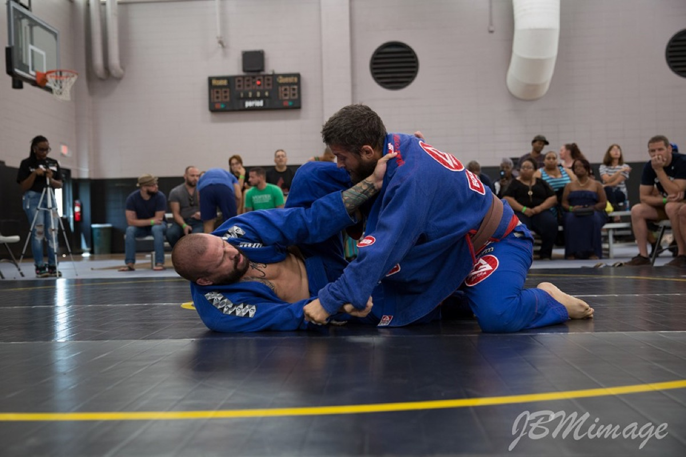

SonnyParlin
Scroll
A first class in West Hartford, Connecticut. Thirty-four years old, no idea what was coming.
September 4, 2007. The day everything else in my life started organizing itself around a mat.
January 28, 2009. Promoted by Royce Gracie.
July 11, 2010. Promoted by Marco DeLima.
January 18, 2015. Promoted by Rob Kahn in Tampa. Gracie Bradenton opens the same year.

September 3, 2017. Promoted by Rob Kahn in front of family and close friends.
September 30, 2023. Promoted by Rob Kahn.
July 30, 2026. Promoted by Robby Donofrio of Gracie Brandon.



Drag or scroll sideways · snaps to each photo